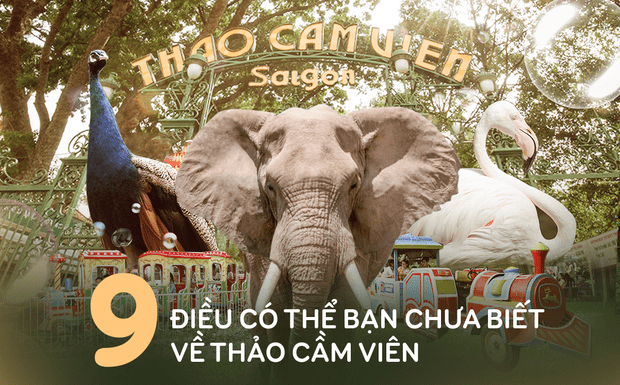

Cứ nhắc tới Thảo Cầm Viên làm tôi lại chợt nhớ đến câu chuyện do mẹ tôi kể khi bà còn nhỏ. Mẹ bảo hồi hơn 55 năm trước gia đình ông bà ngoại tôi nghèo lắm, cả nhà kiếm sống bằng nghề cắt rau muống rồi gánh ra chợ bán nên thu nhập chẳng là bao. Mà thời đấy thì chẳng những kinh tế mà đời sống vật chất lẫn tinh thần của mọi người vẫn còn đơn sơ, nghèo nàn, nhất là tụi con nít như mẹ tôi chẳng có gì để vui chơi ngoài mấy trò nhảy dây, thảy gạch hay nhà chòi, hái trộm trái cây trong vườn,… Ấy vậy mà với mẹ, những trò chơi giản đơn ấy lại rất vui và chúng đọng lại nhiều ký ức tuổi thơ hơn là thời bọn tôi chỉ chăm chăm vào mấy quyển truyện tranh, xem hoạt hình hay chơi game,… Rồi mẹ lại bảo: “Thay vì bây giờ tụi con một năm ước sẽ được đi du lịch nước ngoài 1 lần thì với thời của mẹ có khi nó còn chẳng hấp dẫn bằng một tấm vé đến Sở Thú – Thảo Cầm Viên”.
Mẹ kể tiếp: “Hồi đấy ông bà ngoại phải dành dụm dữ lắm mới có thể mỗi năm dắt mẹ tới Sở thú 1 lần. Có cái năm đó cũng không nhớ vì sao mà ông bà ngoại không chở được, một mình mẹ bất chấp đạp chiếc xe đạp lộc từ nhà đến Sở thú khoảng gần 20km trong khi thời đó đường xá còn gập ghềnh, ao sông ngoằn ngoèo chứ có được thẳng thóm như bây giờ. Vậy đó, mê Sở thú lắm nên đứa con nít nào cũng bất chấp đi cho bằng được bởi nó chẳng khác gì như một ước mơ thuở bé”. Nghe xong chuyện của mẹ, nó làm tôi chợt ngẫm về mình và thấy cũng có khác gì đâu!?
Và sau hơn 1 ngày dành thời gian trở về để tìm hiểu, tôi nhận ra bản thân đã có những lầm tưởng, những điều hoàn toàn không ngờ tới về một Thảo Cầm Viên ở hiện tại có gì, khiến nó trở nên mới mẻ và cực kỳ thú vị hơn những gì tôi biết về nơi này từ cách đây… rất lâu.
